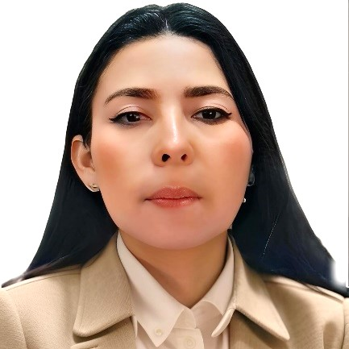
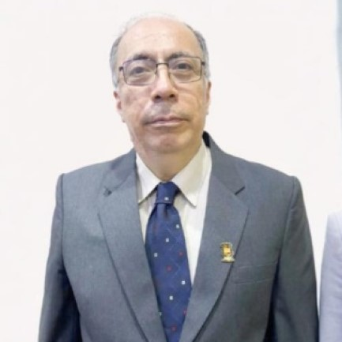
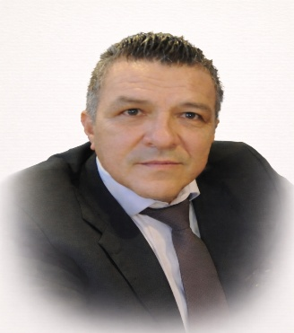
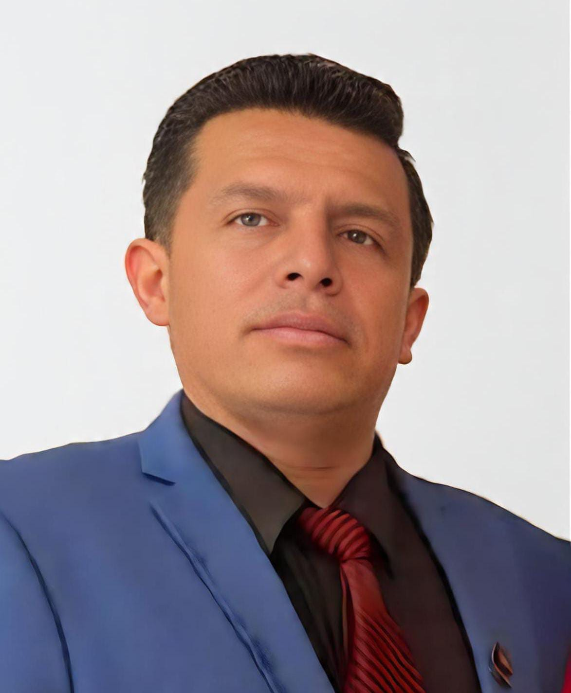
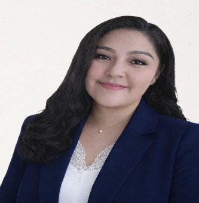
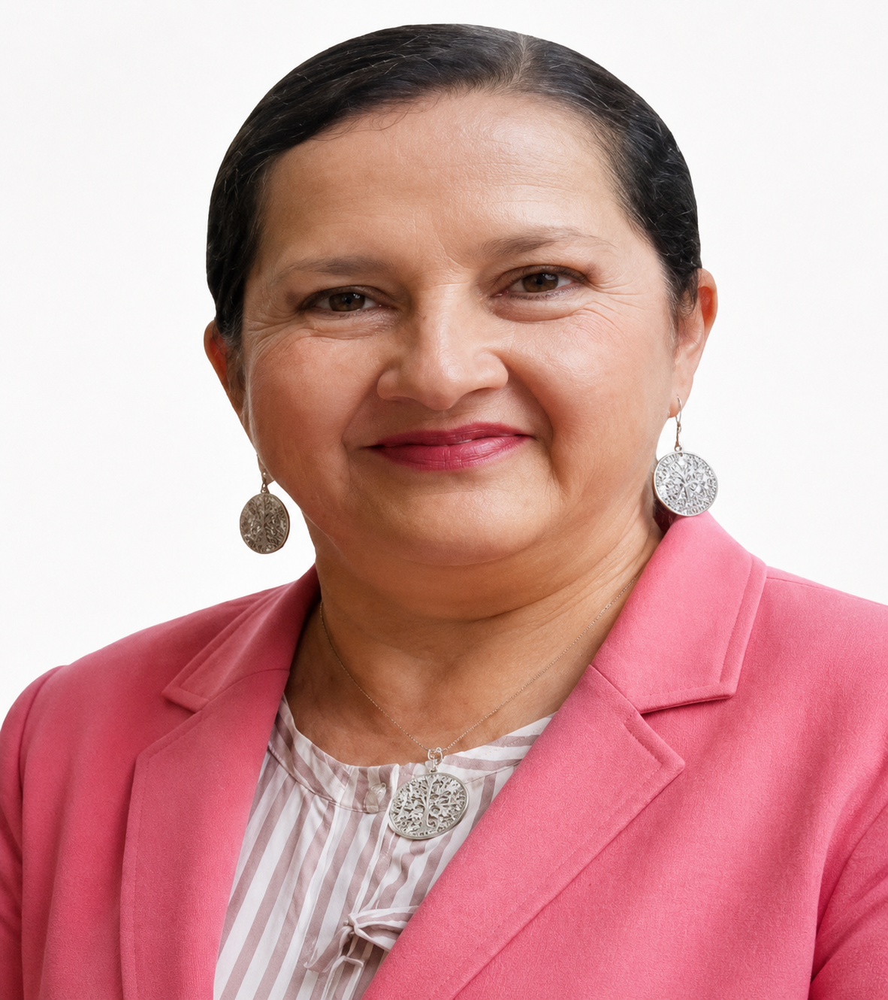
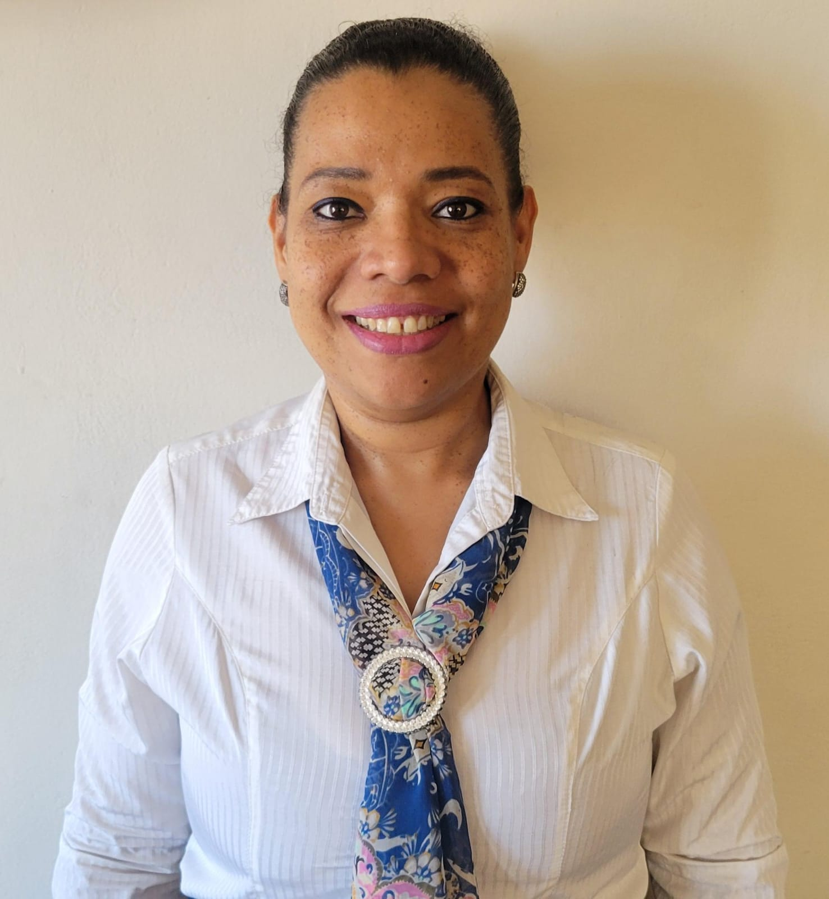
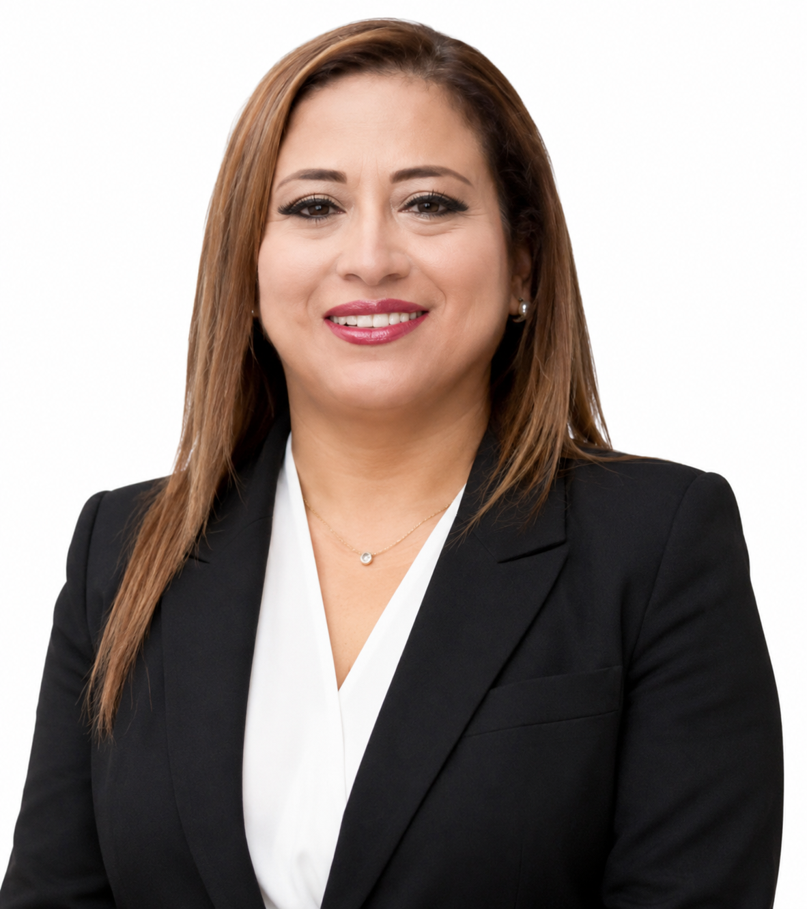
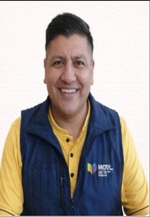

Mgs. Marcia Condo
Lic.Ana Chávez

Mgs. Pablo Largo
Mgs. Glenda toro
Mgs.Yesmania Jaramillo
Mgs. Lissette Jara
Dra. Lorena Delgado

Lic.Lourdes Durán

Mgs. Andrea García
Lic.Diego Freire
Mgs. Omar Ordoñez
Mgs.Geovanny Armijos
Mgs. Karmi Zúñiga
Mgs. Alicia Sarmiento

Ing. Vinicio Sánchez
Mgs. Dennis Tinoco

Lic. Fabián Macanchí
Mgs. Tania Loaiza
Lic. Lorena Macas

Mgs. Luis Ordóñez
Mgs. María Ordóñez
Mgs. Diana Ordóñez

Lic. Yadira Morocho

Mgs. María Murillo
Mgs. María Ramírez
Lic. Paola Valle

Mgs. Tanya Preciado
Lic. Ronal Romero
Mgs. Gladys Tituana
Mgs. Marianela Abad
Mgs. Claudia Aguilar
Mgs. Mayra Armijos

Mgs. Mery Asanza
Mgs. Jose Camacho
Lic. Diego Torres
Lic. José Chamba

Mgs.Blanca Loja
Mgs. Jorge Inga
Mgs. Vanessa Preciado
Personal Administrativo y de Servicio
Mgs. Marvin Ochoa

Psic. Patricio Suca

lic. Manuel Gálvez
×